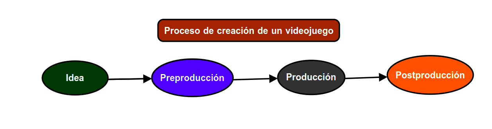
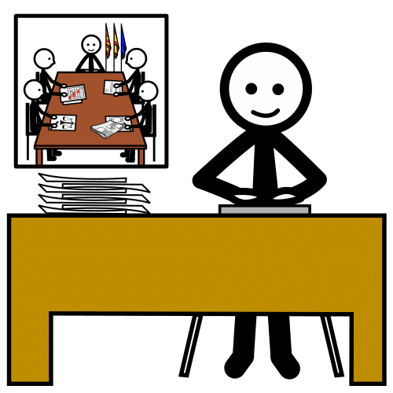
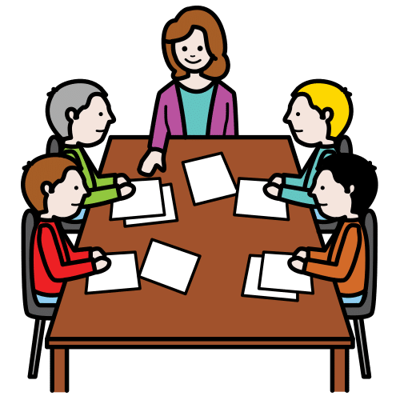
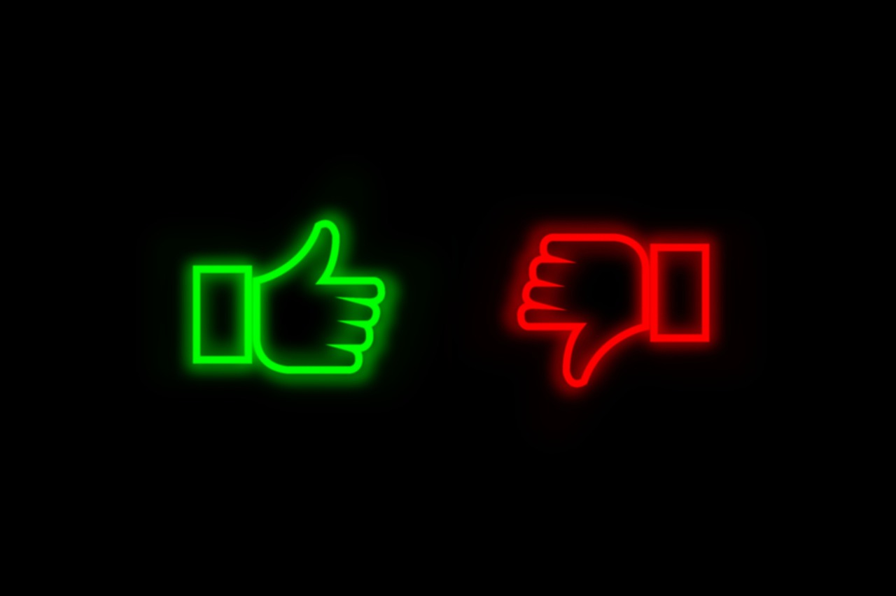

Una vez que sabemos cómo es un videojuego vamos a ver cómo es su proceso de creación.
A continuación, vamos a conocer las fases de creación de un videojuego y los profesionales involucrados en esta tarea.
¡Ánimo, empezamos!
Proceso de creación de un videojuego
En el proceso de creación de un videojuego, debemos utilizar la creatividad en el inicio, desarrollo y final de la historia, la originalidad a la hora de elegir los gráficos, el sonido y el ingenio con las reglas, entre otras.
Importante es ser creativo y elegir una temática original.
Debes elegir un título para el juego, seleccionar los fondos en los que se encuentren los objetos, la música que se escuchará de fondo, la sincronización de los objetos, qué disfraces van a utilizar, el momento adecuado para que suenen determinados sonidos, entre otros.
Proceso
En el proceso de creación interviene todo un equipo multidisciplinar (compuesto por personas de varias disciplinas científicas, tecnológicas o culturales) que colaboran e intercambian conocimientos, el número de componentes dependerá de la complejidad del videojuego.
Todos estos pasos se pueden agrupar en las siguientes fases del proceso de creación de un videojuego:

Idea
El proceso de creación de un videojuego empieza con la búsqueda de una idea.
Generalmente, esta idea va sufriendo modificaciones con el tiempo.
En esta fase se debe empezar a definir las mecánicas, todo lo que se puede o no hacer (objetivos, reglas, comportamiento de personajes y objetos) y dinámicas, se corresponde con las formas en que las jugadoras y jugadores toman decisiones y se relacionan con el objetivo del juego (trucos, atajos, recompensas...) del videojuego.
La mecánica de juego son todas las reglas y procedimientos que guían a la jugadora o jugador y la respuesta del juego a estos movimientos o acciones.
En parte, las dinámicas están condicionadas por las reglas del juego (mecánica), pero contemplan también las características de cada jugadora y jugador, es decir, las decisiones que toman durante la partida, el tiempo que necesitan, entre otras.
Preproducción
Se establecen los roles de cada persona del equipo de creación multidisciplinar.
En parte, se suele crear un prototipo (primer ejemplar que se crea y que sirve de modelo para producir otros iguales) simplificado del videojuego.
Producción
Suele ser la etapa más larga.
Se le da forma al videojuego gracias a la colaboración e integración del trabajo de cada uno de los miembros del equipo de creación.
Durante este proceso deben existir constantes pruebas y test de funcionamiento para detectar errores antes de llegar el videojuego al consumidor.
Postproducción
En esta fase se corrigen errores que se detecten o que comuniquen las jugadoras y jugadores.
Se ofrece soporte técnico y actualizaciones.
Kardia dice ¿Quieres saber más sobre la creación de un videojuego?
Existen diversos factores que influyen en el proceso de creación de un videojuego por lo que no hay una receta definitiva.
Se deben conocer dichos factores para ser precisos a la hora de diseñar el proceso, comprender las limitaciones y asegurar el éxito.
Los factores más comunes que marcan el desarrollo de proceso de creación son:
- Diseño del juego.
- Género.
- Portabilidad.
- Guía artística visual.
- Presupuesto.
- Equipo de desarrollo.
Entre estos factores, merece la pena destacar dos de ellos:
- Presupuesto: los recursos financieros disponibles para la creación del videojuego.
- Equipo de desarrollo: cada uno de los profesionales que intervienen en el proceso.
La falta de alguno de estos dos factores bloquea prácticamente el funcionamiento del proceso de creación.
¿Quiénes participan en la creación de un videojuego?
En el proceso de creación de un videojuego se forman equipos de trabajo en los que las personas involucradas colaboran entre sí.

En los equipos podemos encontrar los siguientes profesionales:
Diseñadoras y diseñadores de juegos
Crean las reglas del juego, todo lo que se puede o no hacer, obstáculos, consecuencias si no se cumplen objetivos y metas para lograr ganar el juego.
Deben ser muy creativos.
Programadoras y programadores
Convierten las ideas del diseño en un programa que un dispositivo electrónico puede ejecutar.
Conocen lenguajes de programación para crear algoritmos eficaces.
Artistas visuales
Son ilustradoras, diseñadoras y diseñadores gráficos que se dedican a los recursos visuales del juego.
Su tarea consiste en diseñar el aspecto de los personajes, escenarios, objetos, iconos, tipografía....
Músicas o músicos
Crean todos los recursos sonoros o musicales del videojuego.
Esta tarea comprende desde los sonidos producidos por los personajes y acciones del juego, hasta la música de fondo a lo largo del videojuego.
Guionistas
Crean y escriben la narrativa del juego.
¿Cuándo y dónde transcurre el juego?¿Cómo son los personajes?¿Cuáles son sus objetivos?¿A qué se enfrentan?
Especialista sobre la temática del juego
Aporta conocimiento específico sobre la temática del juego.
Si el videojuego es sobre simuladores de aviones, es interesante contar con alguien que conozca sobre esta área.
Productora o Productor
Es la persona encargada de administrar el proyecto.
Controla los tiempos, plazos, presupuesto y comunicaciones entre todas las personas del equipo de trabajo.
Probadoras o Probadores (Testers)
Son las encargadas o encargados de probar las versiones de los juegos en desarrollo.
Su misión consiste en encontrar errores y ayudar a corregirlos.
Si trabajaras en el mundo de los videojuegos, ¿cuál de estas diferentes profesiones te gustaría ejercer?
¿Quién te gustaría ser en el proceso de creación de un videojuego?
En este ejercicio vas trabajar en grupo. Imagina que tu grupo es un equipo de trabajo formado para la creación de un videojuego.
Elige la profesión que te gustaría ser en ese equipo y argumenta los motivos por los que has elegido esa profesión de alguna de las siguientes formas: en el cuaderno, en un documento online, con una presentación, con una infografía, con visual thinking, etc. Elige la forma con la que te sientas más cómoda o cómodo.

Lo positivo y negativo de los videojuegos
Los videojuegos tienen aspectos positivos y negativos.
Empieza por ver la siguiente información:
Ventajas y desventajas de los videojuegos
Adicción a los videojuegos
La organización mundial de la Salud (OMS) clasifica la adicción a los videojuegos como una enfermedad mental.
Según la OMS, el trastorno por uso de videojuegos lo sufren todas aquellas personas que presentan un patrón de comportamiento de juego persistente o recurrente que puede ser en línea o fuera de línea.
Videojuegos y ansiedad, un viaje personal

Luego, una vez visto el vídeo anterior sobre Ventajas y desventajas de los videojuegos, vamos a trabajar en pareja para crear una tabla con tres ventajas y tres desventajas de los videojuegos. Puedes realizar la tabla en tu cuaderno o en el ordenador, elige la forma con la que te sientas más cómoda o cómodo.